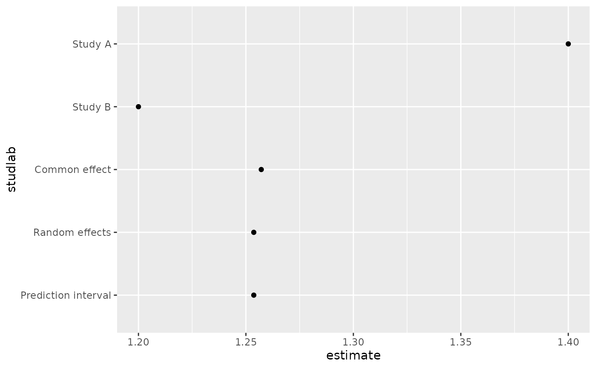

This S3 method for ggplot2::fortify() converts meta objects to
a tidy data frame. It is a wrapper around tidy_meta().
Arguments
- model
An object of class
meta.- data
Ignored. Included for S3 generic compatibility.
- ...
Additional arguments passed to
tidy_meta().
Value
A data.frame as returned by tidy_meta().
Examples
# \donttest{
library(meta)
#> Loading required package: metabook
#> Loading 'meta' package (version 8.5-0).
#> Type 'help(meta)' for a brief overview.
library(ggplot2)
m <- metabin(event.e, n.e, event.c, n.c,
data = data.frame(
event.e = c(14, 30), n.e = c(100, 150),
event.c = c(10, 25), n.c = c(100, 150)
),
studlab = c("Study A", "Study B"),
sm = "RR"
)
library(ggmeta)
ggplot(fortify(m), aes(x = estimate, y = studlab)) +
geom_point()

# }